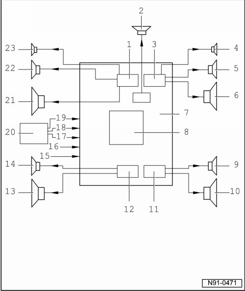

Sound Systems Overview
Sound Systems Overview

1 - Amplifier output stage for left front speaker
2 - Center speaker
• Installed in center of instrument panel
• Function as center speaker
3 - Amplifier output stage for right front speaker
4 - Right Front Treble Speaker
5 - Right Front Midrange Speaker
6 - Right Front Bass Speaker
7 - Complete amplifier, terminal assignment on " Sound 1" system, refer to --> [ Multi-pin Connector A, 24-pin on System ] Connectors on "Sound 1" and "Sound 2" System and terminal assignment on "Sound 2" system, --> [ Multi-pin Connector A, 24-pin on System ] Connectors on "Sound 1" and "Sound 2" System
8 - Source mix (volume, balance, fade, treble, mid-range and bass)
9 - Right Rear Midrange Speaker
10 - Right Rear Bass Speaker
11 - Amplifier output stage for right rear speaker
12 - Amplifier output stage for left rear speaker
13 - Left Rear Bass Speaker
14 - Left Rear Midrange Speaker
15 - CAN bus (for On Board Diagnostic only)
16 - Mono Input Navigation (Language)
17 - Telephone/Language dialog
18 - Right audio input signal
19 - Left audio input signal
20 - Radio or radio navigation system
21 - Left Front Bass Speaker
22 - Left Front Midrange Speaker
23 - Left Front Treble Speaker